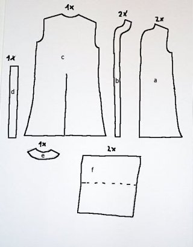

Deprecated:  Function eregi_replace() is deprecated in /srv/www/larpbasteln/index.php on line 22
34
Deprecated:  Function ereg() is deprecated in /srv/www/larpbasteln/class.FastTemplate.php on line 196

    
        
        
            Index.php
        
        
    
    
    
    
        
            
        
    
 
 
          Startseite  Basteln - Waffen  Basteln - Stoff
	                                   Anleitung Kaftan
                                    

	                                   Piratenhemd Arr, Arr!
                                    

	                                   Orient. Pluderhose
                                    

	                                   Stofff&auml;rben "A"
                                    

	                                   Turban wickeln
                                    

	                                   Anleitung Wikingerhose
                                    
  Basteln - Zubeh&ouml  Basteln - Kurioses  Downloads
        
        
<<<<<<< HEAD
              Anleitung Kaftan

Schnittmuster eines einfachen Kaftans
Leider habe ich es verpasst, bei der Herstellung meines Mantels Bilder zu machen. Aber diese Anleitung ist zumindest mal besser als nichts. Als Stoff empfehle ich Baumwolle oder Leinen ("Ditte" oder "Bomull" heisst das Zeug beim blau-gelben Rollenspielausstatter ;))
Die Masse muss jeder an sich selbst anpassen; als grobe Richtlinie k&ouml;nnen folgende Werte dienen:

    * Halsausschnittsbreite: 20 cm
    * Schulterbreite: 50 cm
    * Breite der Unterkante: 70 cm
    * &Auml;rmelbreite: 70 cm (=2x35cm)
    * L&auml;nge 130 cm
    * Breite von b, d und e: 6 cm

Als erstes mal ein Bild der Einzelteile

     a: Linkes und rechtes Vorderteil
       b: Belag f&uuml;r linkes und rechtes Vorderteil
       c: R&uuml;ckenteil
       d: Belag f&uuml;r Schlitz im R&uuml;ckenteil
       e: Belag f&uuml;r den Halsausschnitt desd R&uuml;ckenteiles
       f: Linker und rechter &Auml;rmel

Der Halsausschnitt sollte bei den Vorderteilen tiefer ausgeschnitten sein, als beim R&uuml;ckenteil; das verbessert den Sitz ganz eindeutig.
Als erstes werde ich auf die Tricks beim sog. "Verst&uuml;rzen" eingehen; Verst&uuml;rzen eignet sich hervorragend, um sichbare Kanten (wie die Vorderkanten des Mantels oder den Halsausschnitt) zu gestalten oder um einen Schlitz im Stoff auszuarbeiten. Zuerst der Schlitz, der im R&uuml;ckenteil des Mantels Bewegungsfreiheit schaffen soll:

"./bilderkaftan/S_DCP01004.JPG">
"./bilderkaftan/M_DCP01004.JPG"target=_blank>[640]
"./bilderkaftan/L_DCP01004.JPG"target=_blank>[1024]


 	Zuerst werden die Stoffst&uuml;cke c und d rechts auf rechts aufeinandergelegt, die jeweiligen Mitten aufeinander, und festgesteckt.

"./bilderkaftan/S_DCP01005.JPG">
"./bilderkaftan/M_DCP01005.JPG"target=_blank>[640]
"./bilderkaftan/L_DCP01005.JPG"target=_blank>[1024]


Danach wird der zuk&uuml;nftige Schlitz in U-Form rechteckig umn&auml;ht

"./bilderkaftan/S_DCP01006.JPG">
"./bilderkaftan/M_DCP01006.JPG"target=_blank>[640]
"./bilderkaftan/L_DCP01006.JPG"target=_blank>[1024]


und eingeschnitten. Man beachte dabei die schr&auml;gen Einschnitte in den Ecken des Schlitzes, die bis dicht an die Naht reichen.

"./bilderkaftan/S_DCP01007.JPG">
"./bilderkaftan/M_DCP01007.JPG"target=_blank>[640]
"./bilderkaftan/L_DCP01007.JPG"target=_blank>[1024]


Danach wird das ganze von aussen nach innen umgekrempelt, d.h. das Belagst&uuml;ck einfach durch den Schlitz nach innen gezogen.

"./bilderkaftan/S_DCP01008.JPG">
"./bilderkaftan/M_DCP01008.JPG"target=_blank>[640]
"./bilderkaftan/L_DCP01008.JPG"target=_blank>[1024]


	Es bietet sich an, die frisch umgelegten Stoffst&uuml;cke zu b&uuml;geln, damit erleichtert man sich das N&auml;hen ganz erheblich. Ausserdem kann man so den Sitz der Stoffst&uuml;cke besser kontrollieren.

"./bilderkaftan/S_DCP01009.JPG">
"./bilderkaftan/M_DCP01009.JPG"target=_blank>[640]
"./bilderkaftan/L_DCP01009.JPG"target=_blank>[1024]


	Danach wird der Schlitz nur noch abgen&auml;ht, und der innenliegende Teil vers&auml;ubert (mit einem Zickzackstich umn&auml;ht, um ein Ausfransen zu verhindern). Man kann auch noch eine zweite Naht parallel zur ersten setzen, damit das belagst&uuml;ck nicht von innen vor dem Schlitz h&auml;ngen kann; das h&auml;ngt davon ab, wie breit man das Belagst&uuml;ck gemacht hat.

"./bilderkaftan/S_DCP01010.JPG">
"./bilderkaftan/M_DCP01010.JPG"target=_blank>[640]
"./bilderkaftan/L_DCP01010.JPG"target=_blank>[1024]


Beim Verst&uuml;rzen der Belagst&uuml;cke an der Vorderseite und am Halsausschnitt helfen vielleicht folgende Bilder:
Die Stoffst&uuml;cke a und b werden rechts auf rechts aufeinandergelegt

"./bilderkaftan/S_DCP01011.JPG">
"./bilderkaftan/M_DCP01011.JPG"target=_blank>[640]
"./bilderkaftan/L_DCP01011.JPG"target=_blank>[1024]


und mit ca 5 mm Abstand zur Kante ("Nahtzugabe") zusammengen&auml;ht

"./bilderkaftan/S_DCP01012.JPG">
"./bilderkaftan/M_DCP01012.JPG"target=_blank>[640]
"./bilderkaftan/L_DCP01012.JPG"target=_blank>[1024]


An den Rundungen wird die Nahtzugabe senkrecht zur Naht eingeschnitten (Achtung, nicht die Naht durchschneiden!), damit sich der Stoff nachher beim Umlegen besser an die Rundung anpasst.

"./bilderkaftan/S_DCP01013.JPG">
"./bilderkaftan/M_DCP01013.JPG"target=_blank>[640]
"./bilderkaftan/L_DCP01013.JPG"target=_blank>[1024]


Das Belagst&uuml;ck wird nach hinten umgeschlagen, umgeb&uuml;gelt

"./bilderkaftan/S_DCP01014.JPG">
"./bilderkaftan/M_DCP01014.JPG"target=_blank>[640]
"./bilderkaftan/L_DCP01014.JPG"target=_blank>[1024]


und festgen&auml;ht. Fertig.

"./bilderkaftan/S_DCP01015.JPG">
"./bilderkaftan/M_DCP01015.JPG"target=_blank>[640]
"./bilderkaftan/L_DCP01015.JPG"target=_blank>[1024]


So. Nachdem ich alle meine Tricks erkl&auml;rt habe, kommt die Bauanleitung.
Als erstes werden die St&uuml;cke a und b aufeinandergelegt und verst&uuml;rzt. Achtet dabei darauf, dass ihr nachher nicht mit zwei linken oder mit 2 rechten Seiten dasitzt, die N&auml;hte sind (wegen der Einschnitte) schlecht wieder aufzutrennen. Also lieber zweimal schauen und dann erst n&auml;hen.
Danach wird mit dem Teil d ein Schlitz in das R&uuml;ckenteil c eingearbeitet. Der Schlitz sollte bis knapp unter den Hintern reichen, nur so erf&uuml;llt er seinen Zweck: Beinfreiheit beim K&auml;mpfen. Wenn der Schlitz fertig ist, wird noch der Halsauschnitt des R&uuml;ckenteiles mit dem Teil e verst&uuml;rzt und die Seite der &auml;rmel, an der nachher die H&auml;nde rausschauen sollen, umgen&auml;ht. Und jetzt geht's ans zusammenbauen:
Zuerst werden die Schultern&auml;hte geschlossen, dann die &Auml;rmel angen&auml;ht und die &Auml;rmeln&auml;hte gelschlossen. Wenn man jetzt noch die Seitenn&auml;hte schliesst, ist der Mantel auch schon fast fertig. Wenn noch mehr Beinfreiheit will, kann die Seitenteile auch nur bis zur Mitte schliessen und die verbleibenten Teile von Vorder- und R&uuml;ckenteil umn&auml;hen. Als letztes wird noch der Saum unten umgen&auml;ht oder (je nach Geschmack) einfach nur vers&auml;ubert.
Als Verzierung machen sich besonders edel Schmuckborten, die sich besonders gut an den &auml;rmelenden und am Saum angebracht werden k&ouml;nnen. Diese Schmuckborten bekommt man in Stoffgesch&auml;ften und Stoffabteilungen; Typische Preise liegen dabei bei 0,5 bis 2 Euro pro Meter. Wenn man eine besonders schmale Borte nimmt, kann man auch Halsausschnitt und Vorderkanten des Mantels verzieren.
Jetzt noch ein paar Bilder von dem fertigen St&uuml;ck:
Der fertige Mantel in seiner vollen Pracht. Naja, verziert werden muss er noch...

"./bilderkaftan/S_DCP01019.JPG">
"./bilderkaftan/M_DCP01019.JPG"target=_blank>[640]
"./bilderkaftan/L_DCP01019.JPG"target=_blank>[1024]


Der Halsausschnitt. Hinten ist noch die vers&auml;uberte Verst&uuml;rzung des Nackenausschnittes zu sehen.

"./bilderkaftan/S_DCP01020.JPG">
"./bilderkaftan/M_DCP01020.JPG"target=_blank>[640]
"./bilderkaftan/L_DCP01020.JPG"target=_blank>[1024]


Und so sieht der Halsausschnitt von innen aus.

"./bilderkaftan/S_DCP01022.JPG">
"./bilderkaftan/M_DCP01022.JPG"target=_blank>[640]
"./bilderkaftan/L_DCP01022.JPG"target=_blank>[1024]


Auch eine Gestaltungsform f&uuml;r den Schlitz. Die M&ouml;glichkeiten sind schier unbegrenzt.

"./bilderkaftan/S_DCP01024.JPG">
"./bilderkaftan/M_DCP01024.JPG"target=_blank>[640]
"./bilderkaftan/L_DCP01024.JPG"target=_blank>[1024]


Und die vordere rechte Ecke von innen.
 


"./bilderkaftan/S_DCP01025.JPG">
"./bilderkaftan/M_DCP01025.JPG"target=_blank>[640]
"./bilderkaftan/L_DCP01025.JPG"target=_blank>[1024]


        
    
=======
        <div id="content">
             <h1> Anleitung Kaftan</h1><table border=0 cellpadding=20 width="90%">
<tr valign=top><td valign=top>
<h2>Schnittmuster eines einfachen Kaftans</h2><br />
Leider habe ich es verpasst, bei der Herstellung meines Mantels Bilder zu machen. Aber diese Anleitung ist zumindest mal besser als nichts. Als Stoff empfehle ich Baumwolle oder Leinen ("Ditte" oder "Bomull" heisst das Zeug beim blau-gelben Rollenspielausstatter ;))<br />
Die Masse muss jeder an sich selbst anpassen; als grobe Richtlinie k&ouml;nnen folgende Werte dienen:<br />
<br />
    * Halsausschnittsbreite: 20 cm<br />
    * Schulterbreite: 50 cm<br />
    * Breite der Unterkante: 70 cm<br />
    * &Auml;rmelbreite: 70 cm (=2x35cm)<br />
    * L&auml;nge 130 cm<br />
    * Breite von b, d und e: 6 cm<br />
<br />
Als erstes mal ein Bild der Einzelteile:<br />
<ul><br />
    <li> a: Linkes und rechtes Vorderteil</li><br />
     <li>  b: Belag f&uuml;r linkes und rechtes Vorderteil</li><br />
     <li>  c: R&uuml;ckenteil</li><br />
     <li>  d: Belag f&uuml;r Schlitz im R&uuml;ckenteil</li><br />
     <li>  e: Belag f&uuml;r den Halsausschnitt desd R&uuml;ckenteiles</li><br />
     <li>  f: Linker und rechter &Auml;rmel</li><br />
</ul><br />
Der Halsausschnitt sollte bei den Vorderteilen tiefer ausgeschnitten sein, als beim R&uuml;ckenteil; das verbessert den Sitz ganz eindeutig.<br />
Als erstes werde ich auf die Tricks beim sog. "Verst&uuml;rzen" eingehen; Verst&uuml;rzen eignet sich hervorragend, um sichbare Kanten (wie die Vorderkanten des Mantels oder den Halsausschnitt) zu gestalten oder um einen Schlitz im Stoff auszuarbeiten. Zuerst der Schlitz, der im R&uuml;ckenteil des Mantels Bewegungsfreiheit schaffen soll:<br>
</td><td valign=top>
<br>
<a href="./bilder/kaftan/M_DCP01004.JPG"target=_blank>[640]</a>
<a href="./bilder/kaftan/kaftan-00.jpg"target=_blank>[1024]</a>
</td></tr>
<tr valign=top><td valign=top>
 	Zuerst werden die Stoffst&uuml;cke c und d rechts auf rechts aufeinandergelegt, die jeweiligen Mitten aufeinander, und festgesteckt.
</td><td valign=top>
<br>
<a href="./bilder/kaftan/M_DCP01005.JPG"target=_blank>[640]</a>
<a href="./bilder/kaftan/kaftan-01.jpg"target=_blank>[1024]</a>
</td></tr>
<tr valign=top><td valign=top>
Danach wird der zuk&uuml;nftige Schlitz in U-Form rechteckig umn&auml;ht
</td><td valign=top>
<br>
<a href="./bilder/kaftan/M_DCP01006.JPG"target=_blank>[640]</a>
<a href="./bilder/kaftan/kaftan-02.jpg"target=_blank>[1024]</a>
</td></tr>
<tr valign=top><td valign=top>
und eingeschnitten. Man beachte dabei die schr&auml;gen Einschnitte in den Ecken des Schlitzes, die bis dicht an die Naht reichen.
</td><td valign=top>
<br>
<a href="./bilder/kaftan/M_DCP01007.JPG"target=_blank>[640]</a>
<a href="./bilder/kaftan/kaftan-03.jpg"target=_blank>[1024]</a>
</td></tr>
<tr valign=top><td valign=top>
Danach wird das ganze von aussen nach innen umgekrempelt, d.h. das Belagst&uuml;ck einfach durch den Schlitz nach innen gezogen.
</td><td valign=top>
<br>
<a href="./bilder/kaftan/M_DCP01008.JPG"target=_blank>[640]</a>
<a href="./bilder/kaftan/kaftan-04.jpg"target=_blank>[1024]</a>
</td></tr>
<tr valign=top><td valign=top>
	Es bietet sich an, die frisch umgelegten Stoffst&uuml;cke zu b&uuml;geln, damit erleichtert man sich das N&auml;hen ganz erheblich. Ausserdem kann man so den Sitz der Stoffst&uuml;cke besser kontrollieren.
</td><td valign=top>
<br>
<a href="./bilder/kaftan/M_DCP01009.JPG"target=_blank>[640]</a>
<a href="./bilder/kaftan/kaftan-05.jpg"target=_blank>[1024]</a>
</td></tr>
<tr valign=top><td valign=top>
	Danach wird der Schlitz nur noch abgen&auml;ht, und der innenliegende Teil vers&auml;ubert (mit einem Zickzackstich umn&auml;ht, um ein Ausfransen zu verhindern). Man kann auch noch eine zweite Naht parallel zur ersten setzen, damit das belagst&uuml;ck nicht von innen vor dem Schlitz h&auml;ngen kann; das h&auml;ngt davon ab, wie breit man das Belagst&uuml;ck gemacht hat.
</td><td valign=top>
<br>
<a href="./bilder/kaftan/M_DCP01010.JPG"target=_blank>[640]</a>
<a href="./bilder/kaftan/kaftan-06.jpg"target=_blank>[1024]</a>
</td></tr>
<tr valign=top><td valign=top>
Beim Verst&uuml;rzen der Belagst&uuml;cke an der Vorderseite und am Halsausschnitt helfen vielleicht folgende Bilder:<br><br />
Die Stoffst&uuml;cke a und b werden rechts auf rechts aufeinandergelegt
</td><td valign=top>
<br>
<a href="./bilder/kaftan/M_DCP01011.JPG"target=_blank>[640]</a>
<a href="./bilder/kaftan/kaftan-07.jpg"target=_blank>[1024]</a>
</td></tr>
<tr valign=top><td valign=top>
und mit ca 5 mm Abstand zur Kante ("Nahtzugabe") zusammengen&auml;ht
</td><td valign=top>
<br>
<a href="./bilder/kaftan/M_DCP01012.JPG"target=_blank>[640]</a>
<a href="./bilder/kaftan/kaftan-08.jpg"target=_blank>[1024]</a>
</td></tr>
<tr valign=top><td valign=top>
An den Rundungen wird die Nahtzugabe senkrecht zur Naht eingeschnitten (Achtung, nicht die Naht durchschneiden!), damit sich der Stoff nachher beim Umlegen besser an die Rundung anpasst.
</td><td valign=top>
<br>
<a href="./bilder/kaftan/M_DCP01013.JPG"target=_blank>[640]</a>
<a href="./bilder/kaftan/kaftan-09.jpg"target=_blank>[1024]</a>
</td></tr>
<tr valign=top><td valign=top>
Das Belagst&uuml;ck wird nach hinten umgeschlagen, umgeb&uuml;gelt
</td><td valign=top>
<br>
<a href="./bilder/kaftan/M_DCP01014.JPG"target=_blank>[640]</a>
<a href="./bilder/kaftan/kaftan-10.jpg"target=_blank>[1024]</a>
</td></tr>
<tr valign=top><td valign=top>
und festgen&auml;ht. Fertig.
</td><td valign=top>
<br>
<a href="./bilder/kaftan/M_DCP01015.JPG"target=_blank>[640]</a>
<a href="./bilder/kaftan/kaftan-11.jpg"target=_blank>[1024]</a>
</td></tr>
<tr valign=top><td valign=top>
So. Nachdem ich alle meine Tricks erkl&auml;rt habe, kommt die Bauanleitung.<br />
Als erstes werden die St&uuml;cke a und b aufeinandergelegt und verst&uuml;rzt. Achtet dabei darauf, dass ihr nachher nicht mit zwei linken oder mit 2 rechten Seiten dasitzt, die N&auml;hte sind (wegen der Einschnitte) schlecht wieder aufzutrennen. Also lieber zweimal schauen und dann erst n&auml;hen.<br />
Danach wird mit dem Teil d ein Schlitz in das R&uuml;ckenteil c eingearbeitet. Der Schlitz sollte bis knapp unter den Hintern reichen, nur so erf&uuml;llt er seinen Zweck: Beinfreiheit beim K&auml;mpfen. Wenn der Schlitz fertig ist, wird noch der Halsauschnitt des R&uuml;ckenteiles mit dem Teil e verst&uuml;rzt und die Seite der &auml;rmel, an der nachher die H&auml;nde rausschauen sollen, umgen&auml;ht. Und jetzt geht's ans zusammenbauen:<br />
Zuerst werden die Schultern&auml;hte geschlossen, dann die &Auml;rmel angen&auml;ht und die &Auml;rmeln&auml;hte gelschlossen. Wenn man jetzt noch die Seitenn&auml;hte schliesst, ist der Mantel auch schon fast fertig. Wenn noch mehr Beinfreiheit will, kann die Seitenteile auch nur bis zur Mitte schliessen und die verbleibenten Teile von Vorder- und R&uuml;ckenteil umn&auml;hen. Als letztes wird noch der Saum unten umgen&auml;ht oder (je nach Geschmack) einfach nur vers&auml;ubert.<br />
Als Verzierung machen sich besonders edel Schmuckborten, die sich besonders gut an den &auml;rmelenden und am Saum angebracht werden k&ouml;nnen. Diese Schmuckborten bekommt man in Stoffgesch&auml;ften und Stoffabteilungen; Typische Preise liegen dabei bei 0,5 bis 2 Euro pro Meter. Wenn man eine besonders schmale Borte nimmt, kann man auch Halsausschnitt und Vorderkanten des Mantels verzieren.<br />
Jetzt noch ein paar Bilder von dem fertigen St&uuml;ck:<br />
Der fertige Mantel in seiner vollen Pracht. Naja, verziert werden muss er noch...
</td><td valign=top>
<br>
<a href="./bilder/kaftan/M_DCP01019.JPG"target=_blank>[640]</a>
<a href="./bilder/kaftan/kaftan-12.jpg"target=_blank>[1024]</a>
</td></tr>
<tr valign=top><td valign=top>
Der Halsausschnitt. Hinten ist noch die vers&auml;uberte Verst&uuml;rzung des Nackenausschnittes zu sehen.
</td><td valign=top>
<br>
<a href="./bilder/kaftan/M_DCP01020.JPG"target=_blank>[640]</a>
<a href="./bilder/kaftan/kaftan-13.jpg"target=_blank>[1024]</a>
</td></tr>
<tr valign=top><td valign=top>
Und so sieht der Halsausschnitt von innen aus.
</td><td valign=top>
<br>
<a href="./bilder/kaftan/M_DCP01022.JPG"target=_blank>[640]</a>
<a href="./bilder/kaftan/kaftan-14.jpg"target=_blank>[1024]</a>
</td></tr>
<tr valign=top><td valign=top>
Auch eine Gestaltungsform f&uuml;r den Schlitz. Die M&ouml;glichkeiten sind schier unbegrenzt.
</td><td valign=top>
<br>
<a href="./bilder/kaftan/M_DCP01024.JPG"target=_blank>[640]</a>
<a href="./bilder/kaftan/kaftan-15.jpg"target=_blank>[1024]</a>
</td></tr>
<tr valign=top><td valign=top>
Und die vordere rechte Ecke von innen.<br />
 <br />

</td><td valign=top>
<br>
<a href="./bilder/kaftan/M_DCP01025.JPG"target=_blank>[640]</a>
<a href="./bilder/kaftan/kaftan-16.jpg"target=_blank>[1024]</a>
</td></tr>
</table>

        </div>
>>>>>>> ab728574b16ca5725ca27f6d0242cb58d508fcf6
    
